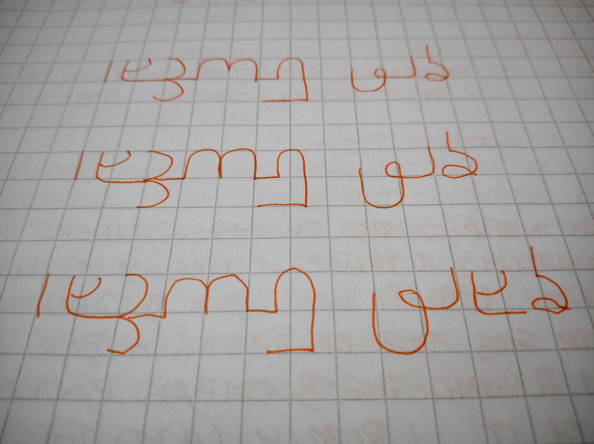

Work in Progress
Damiá Modal Music Demos, 2025-

Demos for “Seven Songs of Yearning for a New World, Sung by a Starship,” a new performance work and the first onstage collaboration between ONCE WE WERE ISLANDS and Ruby Louise Rose. This Queer Futurist work combines original music and songs with poetic text to tell the story of a group of Queer refugees who leave Earth. They are carried through space by a starship powered by desire. The starship sings songs that are expressions of the yearning for a new home where Queer people can thrive and live to our full potential. It is our artistic ambition with this work to blend together elements of a sci-fi concept album with theatre to create an event that is tender and intimate yet also inspiring and political. Music and songs will be composed by Ruby Louise Rose to text and lyrics created by ONCE WE WERE ISLANDS. These elements are woven together into a 60-minute event performed live by ONCE WE WERE ISLANDS and Ruby Louise Rose with modulated voice, bass guitar and electronics.
See here and here for more demos.
Transsexual Slowcore Demos, 2025-

Sketches for bass guitar and drum machine.
for Bob, 2024-